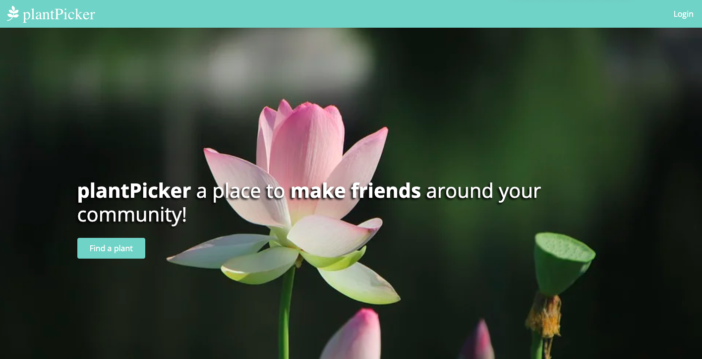

Share plants with your community
This was the final project for the Bootcamp. It is a web app whose aim is to connect people living in the same area (or city) sharing their plants free of charge or tips about keeping them. An idea that came out at the time of the 3rd longest UK lockdown when the necessity to connect “safely” with people was very much felt but also there was a boost in plants sales. (Click on the picture below to head to the website!)
The exchange of plants could take place outdoor, ideally safely distanced in a park or (in a post pandemic scenario) in nice cafes around London with a nice warm cuppa as a witness!
The app is built with Ruby on Rails with some little nice features such us the chat box (using WebSocket), the search bar for location (geocoding), JavaScript for interactive galleries of pictures and Cloudinary to safely store pictures uploaded by users. PostgreSQL was the database of choice.